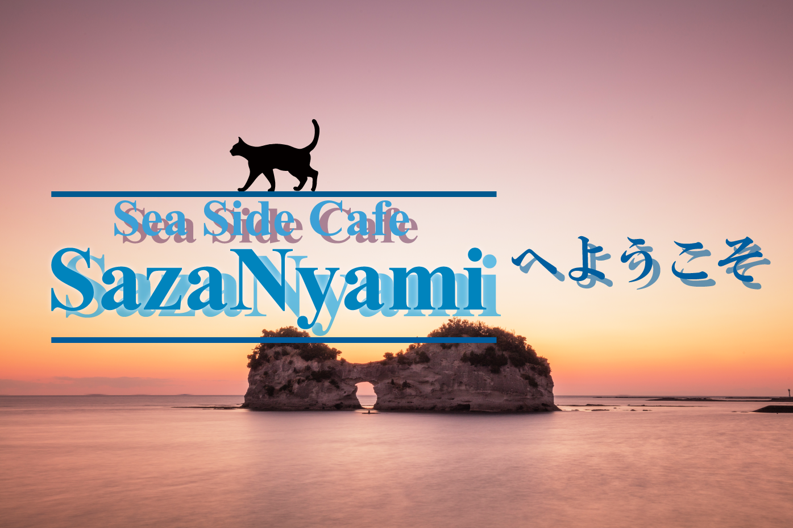

はじめに
※こちらのサイトは架空のサイトです※
『Cafe SazaNyami』は店主が老後の楽しみに、一匹の黒猫と一緒に始めた小さなカフェです。
緩やかな時間が流れるこの場所で、忙しい日々を忘れてのんびりしませんか？
人間（店主とアルバイトさん）、猫（マスター）共々お待ちしております。
★新型コロナウイルス対策について★
皆さま、いつも『Cafe SazaNyami』へご来店いただき、誠にありがとうございます。
店主（人間）です。
コロナウイルスが世間を騒がせている昨今、当店でも
消毒液の設置、席数の削減、換気の徹底などの対策を実施しています。
皆さまにはご不便をおかけ致しますが、何卒ご理解とご協力をお願いいたします。
新着情報
- Topページに「新型コロナウイルス対策について」を追加しました
- Menuページに『Pick Up』項目を追加しました
- サイトを開設しました